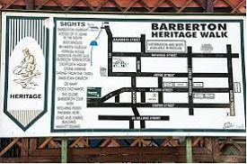

Bheka Jayson Lushaba
Durban

I have always wanted to visit durban because it is not only a place of intertainment it is also a place where you can experience the majestic Drakensberg Mountains, the abundant wildlife of Hluhluwe-iMfolozi Game Park, and the wetland wonders of St. Lucia, by driving just two-and-a-half to three-and-a-half hours outside of the city.
The language that I would like to learn is japanese
I would like to learn japanese because i love the japanese culture and I love that japanese people are taught to be thoughtful and respectful to others. They put emphasis on harmony and peaceful relationships, and try to avoid conflicts as much as possible
| English Phrase | Japanese Phrase |
|---|---|
| Good morning | Ohayou gozaimasu |
| How much is it? | Ikura desu ka? |
| sympathy and compassion | Giri and Ninjo |
Barberton Heritage Walk
- South Africa's first gold deposits were discovered in the Barberton Greenbelt
- it holds paleontological treasures more than 3 billion years old.
- Although Barberton Greenbelt rock formations date back some 3.5 million years, a 2003 study concluded that the ironstone deposits believed to contain the ancient life forms actually date to more recent geologic eras.
Barberton Museum

- The Barberton Museum is located in Barberton which is known for its rich history and is considered to be the oldest in the province.
- It was initially created as a place to house collections of plants and animals from the region, but over time it expanded to include collections of art, history, and geology.
- One of the main attractions at the Barberton Museum is the collection of fossils from the Barberton Greenstone Belt.
pilgrims rest
- Pilgrim's Rest is a small town in the Mpumalanga province of South Africa that was founded during the 1870s gold rush.
- The town was declared a National Monument in 1986 and has been preserved as a living museum, showcasing what life was like in the late 19th and early 20th centuries.
- Visitors to Pilgrim's Rest can explore the town's historic buildings, including the Royal Hotel.